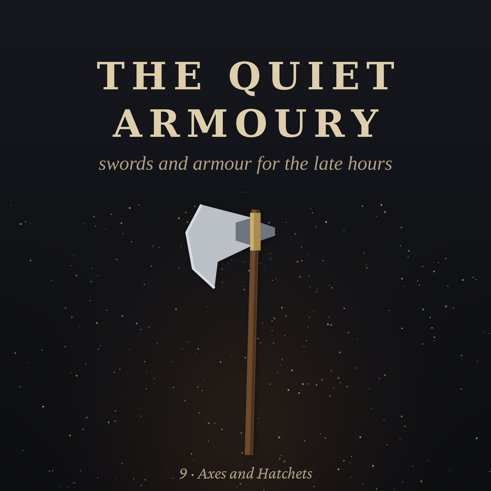

The Quiet Armoury · Episode 9 · 39 min
Axes and Hatchets
Helve: the old word for an axe handle, and fitting the head to it is called hanging the axe. A January night in 1880, in a logging camp deep in the woods of northern Maine: you are the cook's helper, and forty men sit on the deacon seat by the iron stove, sharpening their axes... Inside: the stone hand-axes too beautiful to use, green jadeitite axes carried from the Alps to Britain, Ötzi's copper axe, the Minoan double axe, the Roman fasces, the throwing axe of the Franks, the bearded axe and the Dane axe, the silver-inlaid axe from Mammen, the Lochaber axe, the broad axe that shaped every old barn, the tomahawk and burying the hatchet, the camp blacksmith welding a steel bit into an iron head, and the old question: axe or sword? Chapters: The stone in the hand · The man in the ice · The double axe · The Franks' axe · The bearded axe · The axe of the north · The broad axe and the felling axe · The tomahawk · The forest · The camp blacksmith · Hanging the axe · Axe or sword? · Sharpening · Elsewhere · The axe in uniform · Night in the camp. Sources: Acheulean hand-axe studies, the Alpine jadeitite axes of Neolithic Britain, the South Tyrol Museum of Archaeology on Ötzi's axe, Procopius and Gregory of Tours, the Bayeux Tapestry, John Smith (1612), the Haudenosaunee Great Law of Peace, accounts of 19th-century American logging. Read by a synthetic voice; script written and fact-checked by the show's team. Additional sounds: Joseph Sardin, BigSoundBank.com (CC0).
The script
The axe is the only weapon in this armoury that people still keep in the house, by the door, and use every week.
It has felled forests, built ships, split firewood for every winter of human history, cleared the land for every field, and shaped the beams of every old barn and church. And for most of that time, whenever trouble came, it was also the weapon nearest to hand.
A sword is a weapon that can be used as a tool, badly. An axe is a tool that can be used as a weapon, very well.
The Quiet Armoury. Episode nine... axes and hatchets.
It is a night in January, in the year eighteen eighty, deep in the forests of northern Maine, in a logging camp, forty miles from the nearest town.
The camp is a cluster of log buildings in a clearing, half buried in snow. A bunkhouse for the men. A cookhouse. A stable for the horses and the oxen. A blacksmith's shed. And all around, for as far as anyone could walk in a week, white pines and spruce, tall and dark, standing in the snow.
You are fifteen. You are the cook's helper... the cookee, the men call you. You wash pots, carry water from the hole in the frozen stream, keep the fires going, and ring the iron triangle for meals. And in the evening, when the work is done, you sit in the bunkhouse by the big iron stove and listen to the men talk.
Tonight, as most nights, they are sharpening their axes.
There are forty men in the camp, and nearly every one of them has his own axe. They are particular about them. A man's axe is his own, and nobody else touches it, the way nobody else would wear his boots. Each one sits on the edge of his bunk with his axe across his knees, and a little flat stone, and works it along the edge, slowly, in small circles, spitting on the stone now and then, and testing the edge with his thumb.
They sit on the deacon seat... a long, rough bench of split log that runs the length of the bunkhouse, in front of the bunks, where every man sits in the evening, his back to his bed, his feet toward the stove. Wet socks and mittens hang steaming from a line strung above the stove. The room smells of wool, wood smoke, pine pitch, and forty men.
The sound fills the bunkhouse. A soft, steady whispering of stone on steel, forty times over.
While they work, let us go back to the beginning. A very long way back.
Chapter one. The stone in the hand.
The first axe had no handle at all.
More than a million and a half years ago, in Africa, our distant ancestors began to make a new kind of stone tool. They took a lump of flint or quartzite, and struck flakes off it, from both sides, all the way around, until it was shaped like a large teardrop or a pear, with a sharp edge all around and a thicker, rounded end that fitted the palm of the hand.
Archaeologists call it the hand-axe. It was used to butcher animals, to dig, to cut wood, to scrape hides. And it was made, in almost the same shape, for more than a million years, across Africa, Europe and Asia. It is the longest-lasting design in human history.
Some of these hand-axes are very beautiful... symmetrical, thin, carefully worked far beyond what was needed for cutting. Some archaeologists think that their makers took a pride in them, or made them to show their skill, the way a craftsman today might make something finer than it needs to be. Nobody can ask them.
Then, around ten thousand years ago, as people began to farm, the axe changed. Stone axe heads were ground and polished smooth, against stones, with sand and water, for days, until they had a sharp, even edge. And they were fixed to handles... wedged into a hole in a wooden club, or bound with sinew and resin into the fork of a branch.
With a polished stone axe, a man could fell a tree. And with enough men, enough axes, and enough years, people could clear the great forests of Europe, and open the land for fields. Experiments have shown that a polished stone axe fells a tree more slowly than a steel one... but not nearly as slowly as you might think. It simply needs more care, and more patience.
Some stone axes were never meant for trees at all. In the Alps of northern Italy, people quarried a rare, hard, green stone called jadeitite, high on the mountains, and ground it, for hundreds of hours, into long, thin, polished axe heads, glossy as glass. Those axe heads travelled all over Europe... to Brittany, to Denmark, to the far north of Scotland... passed from hand to hand, over hundreds of miles. Some of them have been found without a mark of use on them, laid carefully in the ground. They were treasures, not tools.
Chapter two. The man in the ice.
In nineteen ninety-one, two walkers in the Alps, on the border between Austria and Italy, found a body in the melting ice of a glacier. They thought it was a lost climber. It turned out to be a man who had died there some five thousand three hundred years ago.
He had his clothes with him... cap, coat, leggings, shoes stuffed with grass. He had a bow, unfinished, and a quiver of arrows, a dagger of flint, and a little kit for making fire. And he had an axe.
Its head was a small, wedge-shaped blade of almost pure copper... ninety-nine point seven parts in a hundred. It was set into the bent end of a handle of yew wood, about sixty centimetres long, and bound tightly with leather and birch tar.
Scientists found that the copper came from mines far to the south, in Tuscany. So the axe was a precious thing... metal from far away, at a time when most people still used stone. It may have been a sign of who he was. When modern researchers made a copy of it and tried it out, they found that it could fell a yew tree in under an hour.
The man in the ice has a name now, given to him by the newspapers, after the valley where he was found. Ötzi. You can visit him, in a cold room, behind glass, in a museum in the Italian town of Bolzano. His axe lies in a case nearby.
Chapter three. The double axe.
On the island of Crete, nearly four thousand years ago, the people we call the Minoans built great palaces, painted with dolphins and lilies and young people leaping over bulls. And everywhere in those palaces, carved into stones, painted on pots, made in gold and bronze, there is one sign: an axe with two blades, back to back, like the wings of a butterfly.
The Greeks later called it the labrys. Some scholars have suggested that the great palace at Knossos, with its maze of rooms and passages, was the original labyrinth of the old Greek story... the house of the double axe. It is a lovely idea, and it is possible, though nobody can prove it.
The double axes of Crete were almost certainly holy objects, not weapons. Some of them are made of thin sheets of gold. You could not cut butter with them.
And in Rome, a different axe stood for power. When a Roman magistrate walked through the city, he was preceded by attendants carrying the fasces... a bundle of wooden rods, tied together with red straps, and, outside the city, with an axe blade sticking out of the bundle. The rods stood for the power to punish. The axe, for the power over life and death.
Long after Rome had fallen, the fasces were carved on government buildings, painted on coins, and set in the hands of statues, all over Europe and America. If you look on the wall behind the speaker's chair in some old parliaments, you may still find them.
Chapter four. The Franks' axe.
In the five hundreds, the Franks... the Germanic people who gave France its name... were famous for one weapon above all. A short, light axe, with a curved head, made for throwing.
The Byzantine historian Procopius describes it. As the Franks charged, he says, at a signal, every man threw his axe at the enemy line, at close range, all at once, to break their shields and their nerve, and then they ran in to finish the fight with their swords and spears.
Later writers called the axe the francisca, the Frankish axe. A thrown axe is hard to dodge, hard to block, and, when it strikes a shield, can split it, or lodge in it and drag it down. Modern experimenters who have made copies say it turns over in the air at a regular rate, so that a skilled thrower, at a set distance, can make the blade strike edge first nearly every time.
By the six hundreds, the Franks had mostly stopped using it. But the idea of throwing an axe did not disappear. Today, in cities all over the world, people gather in bars on a Friday evening to throw axes at wooden targets, for fun, which would have puzzled Procopius very much.
Chapter five. The bearded axe.
Back in the bunkhouse, one of the men... an old Swede, with hands like roots... holds up his axe to the lamp, and looks along the edge with one eye closed.
His people, a thousand years ago, were famous axe men.
The Norsemen of the Viking Age used the axe as a tool every day of their lives, for building their houses and their ships, and splitting their wood. And it was the weapon of the ordinary man, the farmer who went raiding in summer and came home for the harvest. An axe head took much less iron than a sword, and a smith could make one in a day.
The Viking axe head was light, and thin, with a long edge. Many had a beard... the lower part of the blade hanging down below the line of the head, like a beard below a chin. The beard gave a long cutting edge, without much weight. And it gave the axe a hook, to catch the rim of a shield and pull it down, or catch a man's ankle, or his neck.
And then there was the great axe.
The Dane axe, as the English called it, had a broad, thin, crescent-shaped blade, often as wide as a man's hand is long, on a straight handle of ash a metre and more in length. It was held in both hands, and swung in great arcs. A man with a Dane axe could not hold a shield. He relied on the shields of the men around him, and on the length of his weapon, and on the speed of his blow.
The kings of England in the century before ten sixty-six kept bodyguards of professional warriors, called housecarls, and the Dane axe was their weapon. In the Bayeux Tapestry, at the battle of Hastings, you can see them... big men in mail, standing in the shield wall, and one of them swinging a great axe down onto the head of a Norman knight's horse. One blow. The horse is going down.
The Norman chroniclers wrote about the English axes with horror. A Dane axe, they said, could cut through a man and his horse together. That was probably an exaggeration. But not a large one.
Not every Viking axe was for work or war. In a rich grave at a place called Mammen, in Denmark, from the winter of the year nine seventy or so, there was an axe head inlaid all over, on both sides, with fine silver wire, in swirling patterns of a bird and leaves and tendrils... so fine and so distinctive that a whole style of Viking art has been named after it. The Mammen style. It was the axe of a great man, carried to be seen, and buried with him.
Chapter six. The axe of the north.
After the Normans came, the great axe did not vanish from the edges of Europe.
In the Highlands of Scotland, there was the Lochaber axe... a long pole with a great curved blade on the end, and a hook at the top, used to pull riders from their horses. In Ireland, the gallowglass, the heavily armed mercenary soldiers of the chieftains, carried great axes into the fourteen hundreds and fifteen hundreds.
And in Russia, the streltsy, the musketeers of the Tsar, carried a long axe called the berdysh... a pole with a blade like a half-moon, sometimes as long as an arm, fixed to the shaft at its bottom end. It was a weapon, and also a stand. When a musketeer fired his heavy musket, he could rest the barrel in the curve of the axe blade, stuck upright in the ground, to steady his aim.
In the armour of the fourteen hundreds, as we heard in the episode on the long weapons, the axe joined with the hammer and the spike to become the poleaxe, the knight's favourite weapon for fighting on foot. And on horseback, knights carried short axes and hammers hanging from their saddles... a weapon that did not need to cut through steel, only to strike hard enough to dent it, and stun the man inside.
Chapter seven. The broad axe and the felling axe.
But the axe was always, above all, a tool. And as a tool, it came in more shapes than any weapon.
In the bunkhouse in Maine, there are at least four kinds hanging on the wall pegs, and the men can tell you what each one is for, at great length, whether you have asked or not.
The felling axe is for cutting down trees. Its head is narrow and heavy, with a thick wedge shape behind the edge, so that each blow bites in and then throws the chip out. Its handle is long, a little longer than a man's arm, and gracefully curved, like the letter S, so that the hands sit naturally on it as it swings.
Many of the men here use a double-bit axe... an American axe, with two edges, back to back. One edge they keep fine and thin, for clean chopping in good wood. The other they keep thicker and rougher, for knots, frozen wood, and roots, where a fine edge would chip. It is like having two axes in one. And it balances beautifully in the swing, because there is no heavy back on it.
The broad axe is for something quite different: hewing. Turning a round log into a square beam. Its blade is very wide, flat on one side and bevelled on the other, like a chisel, and its handle is bent away from the flat side, so that the hewer's knuckles do not scrape the log as he works along it. A good hewer, working along a log marked with a chalked line, can make a beam so flat and straight that it looks as if it had been sawn.
The beams of every old timber barn, every old church roof, every old ship's frame, were made this way, one stroke at a time. If you look closely at old beams, you can still see the shallow, overlapping scallops left by the broad axe, like the marks of waves on sand.
And the hatchet is the axe's little sibling. Short-handled, light, held in one hand. It is for kindling, for trimming branches, for driving in pegs, for every small job about a camp or a farm. Almost every household in the world, until very recently, had a hatchet somewhere near the woodpile.
Chapter eight. The tomahawk.
One of the men in the camp, younger than the others and quieter, comes from a Penobscot family, from the river towns to the south. He keeps a small axe in his pack that is not like the others... a light head on a straight handle of ash, the handle polished dark by years of use. He calls it a tomahawk, and uses it every day, for everything.
The word comes from the language of the Powhatan people of Virginia. The English captain John Smith, writing about Virginia in the year sixteen twelve, recorded it among their words... tamahaac... and the English took it up.
Long before Europeans came, the peoples of eastern North America made war clubs and axes of stone and wood. When European traders arrived with iron, small light iron axe heads became one of the most wanted goods of all, and traders brought them by the thousand. In the seventeen hundreds, smiths began to make a curious hybrid: a tomahawk whose head was also a pipe bowl, with the handle hollowed out as a stem. One end to cut. The other to smoke. A tool, a weapon, and a gift of friendship, all in one.
There is an old phrase in English, to bury the hatchet... to make peace, and let an old quarrel be forgotten. It comes from the Haudenosaunee, the Iroquois peoples of the north-east. In their tradition, when the five nations made peace with one another, long ago, under the guidance of a man called the Peacemaker, they uprooted a great white pine, and threw their weapons into the hole beneath its roots, into a stream that carried them away, and planted the tree again on top. The Tree of Peace.
The young man from the Penobscot family does not bury his tomahawk. He uses it to split kindling for the cookhouse stove. That, too, is a kind of peace.
Chapter nine. The forest.
What were all these axes for, here, in the year eighteen eighty?
For the pines. All winter, from first snow to the spring thaw, the men go out at dawn in pairs and cut trees. Not only with axes now. In the last few years, a long crosscut saw, pulled by two men, one at each end, has come into the camps, and it is faster for the actual felling. But the axe still does everything else. It cuts the notch that tells the tree which way to fall. It trims off the branches. It cuts the trunk into logs. It clears the roads.
Felling a big pine is careful work. First, on the side toward which the tree should fall, the axemen cut a deep notch, a wedge-shaped mouth, low on the trunk. Then, from the other side, a little higher, the saw goes in, two men pulling it back and forth, until the trunk is held only by a narrow strip of wood between the saw cut and the notch. That strip acts like a hinge. The tree leans, creaks, and begins, very slowly, to fall toward the notch, and the men step back and shout, so that everyone near can hear. Then it comes down, through the branches of its neighbours, with a long rushing sound, and a deep thud that you feel through your boots, and a cloud of snow.
The logs are dragged by oxen and horses, on sleds, along roads of ice, to the bank of the river, and piled there, in great heaps, along the frozen edge. And in the spring, when the ice breaks and the river rises with the melting snow, the logs are rolled into the water, and the whole winter's work goes downstream together, hundreds of thousands of logs, to the sawmills in the towns.
The men who ride the logs down the river, jumping from log to log with long poles in their hands, are called river drivers. It is the most dangerous work in the woods. The men in this bunkhouse are proud of it, and their mothers are not.
Chapter ten. The camp blacksmith.
In the shed at the edge of the clearing, by the light of the forge, the camp blacksmith is working late. He shoes the horses and the oxen, mends the chains and the sled runners, and, when an axe is badly chipped, he mends that too.
Most of the axe heads in the camp were made in factories now, in Connecticut and Pennsylvania, in great works by rivers, where water and steam drive the hammers, and thousands of identical axe heads come off the line every week. That is new. A generation ago, every axe was made by a blacksmith, one at a time.
The old way, which the camp blacksmith still knows, goes like this. Take a bar of soft wrought iron. Fold it around a tapered iron pin, so that it wraps around to make the eye, the hole where the handle will go. Weld the two ends together, in the fire, with a blow of the hammer, so that they become one piece. Then, between the two ends, before welding, slip in a thin piece of hard steel. That will become the edge.
Iron for the body, which is tough and cheap, and does not break. Steel for the bit, which is hard, and holds an edge. Welded together, they make an axe that is better than either metal alone.
When an old axe has been ground down too far, or its steel is cracked, the blacksmith can do something he calls re-steeling. He cuts the worn edge open, slips in a new piece of steel, welds it in, draws it out, hardens it, and tempers it. The axe goes back to its owner as good as new. A man might keep the same axe head for years this way, and wear out a dozen handles.
Chapter eleven. Hanging the axe.
A handle, in the woods, is called a helve. And fitting the head onto it is called hanging the axe. It is an art in itself, and every man in the camp has his opinion about it.
In America, the best helves are made of hickory... a hard, springy wood that absorbs the shock of each blow, so that the axeman's hands do not ring. In Europe, ash. The helve must be cut so that the grain runs straight along its length, from end to end. A helve with crooked grain will snap.
The head is driven onto the top of the helve, and a thin wedge of wood is hammered into a slot in the top, spreading it tight inside the eye. Then the man holds the axe out at arm's length, and sights along it, to see that the edge lines up exactly with the helve, and that the head sits at the right angle. If it does not, the axe will twist in his hands with every blow, and miss its mark. If it does, it is well hung.
Some men soak a new helve in linseed oil, and rub it with their hands, every evening, for weeks, until it is dark and smooth as glass. Some say you should never paint a helve, or varnish it, because varnish raises blisters. Others say the opposite. The argument has been going on in this bunkhouse all winter. It will still be going on in spring.
Chapter twelve. Axe or sword?
There is a question that people have argued about for a thousand years, and the men in the bunkhouse argue about it too, one cold Sunday, when there is no work: which is better in a fight, an axe or a sword?
The honest answer is that it depends.
An axe puts nearly all its weight at the end, in the head. So every blow lands with great force, on a small part of the edge. Against a wooden shield, or a helmet, or a door, that is just what you want. An axe splits, hooks, bites, and breaks. And it is cheap, simple, and quick to make.
But all that weight at the end makes the axe slower to recover after a blow. It cannot thrust. It has very little to guard the hand. It is shorter than a sword of the same weight, unless it is a great two-handed axe. And if you miss, the head carries on, and you must haul it back before you can defend yourself.
A sword is the opposite. Its weight is spread along its length and balanced near the hand. It is quicker, it can cut and thrust, it can parry, and it recovers fast. But it takes much more iron, much more skill to make, and much more skill to use. That is why swords were the weapons of the few, and axes the weapons of the many.
A Viking warrior with a good sword, and an axe in his belt as well, had the best of both. Many did. And the old Swede, who has thought about it for many evenings, says that the best weapon is the one you have with you, and know how to use, and that in his experience it is nearly always the axe, because it is the one you were using anyway.
Chapter thirteen. Sharpening.
The old Swede has finished his axe. He shows you how to do it, because it is part of your education, he says, and because you asked.
First the grindstone, out in the blacksmith's shed... a great round sandstone wheel, as wide as your arm is long, set in a wooden frame, its bottom running through a trough of water. One man turns the crank. The other holds the axe against the wet, turning stone, at just the right angle, moving it slowly across the face, first one side, then the other, until the edge is even and the old nicks are ground away.
Then, in the evening, the small stone, by hand. Small circles. The same angle, always. A light touch. Patience.
He tests the edge, not on his thumb, but on the hair of his forearm. It shaves it clean. He nods.
A dull axe, he tells you, is a dangerous axe. It bounces. It glances off the wood, and finds your leg instead. A sharp axe bites where you aim it. Every man in the camp knows someone who learned that the hard way.
And then he tells you something that every axeman in history would agree with. Let the axe do the work. Do not force it. Lift it, guide it, and let its weight fall. A good axeman can swing all day, and an angry man is finished by noon.
Chapter fourteen. Elsewhere.
Everywhere people cut wood, they made axes. And almost everywhere, the axe became a sign of power, too.
In ancient China, three and a half thousand years ago, the kings of the Shang dynasty had great ceremonial axes of bronze, called yue, with broad curved blades, some cast with fierce faces with open, toothed mouths. A king's general received such an axe as the sign that he commanded in the king's name.
In Persia and India, horsemen carried the tabar, a light, long-handled axe with a crescent blade, often beautifully inlaid with gold, and the saddle axe was the companion of the sabre for centuries.
In New Zealand, the Maori made adzes of pounamu, the hard green stone of the South Island, ground for months to a polished edge. The finest, mounted on carved handles, were the treasures of chiefs, handed down through families and given names, like the swords of the Norse.
And in central Africa, smiths made ceremonial axes with blades of iron and copper, pierced and engraved and shaped like faces, carried by chiefs and their officers at great occasions. Too fine to use. Made to be seen.
Chapter fifteen. The axe in uniform.
The axe never quite left the army either.
In the armies of the eighteen hundreds, every infantry regiment had its pioneers... soldiers whose job was to clear roads, cut down obstacles, break down doors and gates, and build bridges. They carried axes on their shoulders, wore leather aprons, and in many armies, were allowed, or even expected, to grow long beards. In the French Imperial Guard, under Napoleon, the bearded sappers, with their tall fur caps, their white aprons, and their axes, marched at the head of the regiment on parade.
Some regiments in Britain and France still keep bearded pioneers with axes for ceremonies today.
At sea, every warship carried boarding axes... small axes with a spike on the back... for cutting away wreckage and rigging after a battle, and for climbing the side of an enemy ship, by driving the spikes into the wood.
And in every fire station, there is still an axe, red-handled, with a pick on the back, for breaking through doors and walls. The oldest tool of all, still doing the job it has always done: getting through things that stand in the way.
Chapter sixteen. Night in the camp.
The bunkhouse lamps are being turned down. The men hang their axes on the pegs above their bunks, each one in its place, edges turned toward the wall, so that nobody walks into them in the dark.
The big stove is banked up for the night with split birch, and it ticks and hums as it heats. Outside, the snow is falling again, softly, on the roofs, on the woodpiles, on the dark trees standing all around the clearing for forty miles.
You are the last one up. You fill the water pails, so that the cook will have water in the morning, and check the stove, and blow out the last lamp.
Out behind the cookhouse, in a pit lined with stones, the cook has buried a great iron pot of beans, with salt pork and molasses, on a bed of hot coals, covered with earth. They will cook slowly all night, and be dug up, steaming, for breakfast. Bean-hole beans. The men say they are the reason they come back to the woods every winter. The cook says nothing, but he is pleased.
In the dark, lying in your bunk, you can hear forty men breathing, the wind in the pines outside, and, now and then, the soft tick of the stove. On the wall above you, the old Swede's axe hangs on its peg, its edge catching the very last of the firelight.
The axe is the only weapon in this armoury that people still keep in the house, by the door, and use every week.
The old Norse had a word for the hook-shaped beard of their axes, the long drooping edge below the head. They called such an axe skeggøx... the bearded axe.
And the men of the Maine woods, when an axe head was set on its handle at exactly the right angle, so that it swung true and bit clean, did not call it a fine axe, or a good one. They simply said it was well hung. There was no higher praise.
This story was read by a synthetic voice. If these stories keep you company at night, follow the show... it helps others find it.
Also from the late hours: Embers of History · Slow Orbit · Myth and Score
On YouTube: Opera Stories · Slow Orbit
Free line-by-line English translations of art songs
Enjoying the shows? Leave a tip (no fees)